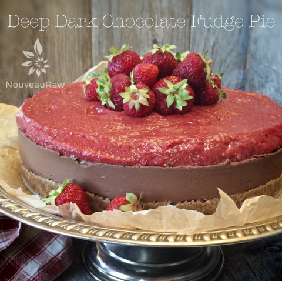

Deep Dark Chocolate Fudge Pie

~ raw, vegan, gluten-free ~
There is a reason that I refer to this as a fudge pie… simply because it has a deep, rich, decadent chocolate flavor that will leave you speechless. And I love food that leaves me speechless!
Midway into the ingredients list, you will spot that orange zest is used in this recipe. Whoever talks about orange zest?
The star of this recipe ought to be the raw cacao since it plays a HUGE role in this recipe, but I am going to keep the cacao humble by bringing forth the orange zest. :)
Even though the outer cover of the orange is there to protect it from the environment, micro, and macro-organisms… it also has several phytonutrients that help maintain good health for YOU!
Get this… the peel of an orange has more than four times as much fiber as the fruit inside, more tangeritin, and nobiletin; flavonoids with anticancer, antidiabetic, and anti-inflammatory properties. (source) The peel also contains higher levels of vitamin C (ascorbic acid) than the juice.
The peel is also rich in essential oils. Next time you peel an orange, do so in the sunlight and watch it spray tiny air molecules of oil in the air. At the same time, inhale deeply to take in the rich orange aroma. The oil glands are spread all over the surface of the peel but even denser near the tiny pits. I bet after reading just this small tidbit of information that you won’t take orange peels for granted now, will you?!
This pie freezes wonderfully and if that is your intent, hold off on adding the strawberry topping until you are close to serving. Be sure to serve thin slivers of this pie to your guests; it is very rich. I hope you enjoy this recipe. Many blessings, amie sue
yields 9″ pie
Crust:
- 2 cups raw almonds, soaked & dehydrated
- 2 tsp ground Ceylon cinnamon
- 1/4 tsp Himalayan pink salt
- 1/2 cup packed, Medjool dates, pitted
- 1/4 cup cold-pressed coconut oil, melted
- 1 Tbsp vanilla extract
Filling:
Topping:
- 2 cups fresh organic strawberries
- 10 Medjool dates, pitted
Preparation:
Crust:
- Even before you start the crust, start melting the cacao butter in a small bowl in the dehydrator.
- Set it at 115 degrees, and it should be melted by the time you are ready to make the filling.
- Be sure to grate the cacao butter to speed up the melting and so it melts evenly.
- In a food processor, fitted with an “S” blade combine the almonds, cinnamon, and salt. Process until the almonds break down to a small crumble.
- Add the dates, coconut oil, and vanilla. Process until the batter sticks together when pinched.
- Wrap the base of the Springform pan with plastic wrap.
- Add the crust down and with even / firm pressure, create the crust. Set aside.
Filling:
- After soaking the cashews, drain and discard the soak water.
- In the blender carafe combine the orange juice, cashews, orange zest, vanilla, sweeteners, and salt until smooth. Depending on the machine this can take 1-4 minutes.
- Add cacao butter and cacao powder, and blend again. The filling is very thick, and you may need to stop occasionally to scrape down the sides.
- Pour the filling onto the crust base and smooth it out. Place into the freezer until firm.
Topping:
- Wash and dry the strawberries. Remove the stems. Place in the food processor.
- Add dates. If the dates are really hard and dry, you may want to soak them in some warm water for about 10 minutes. Be sure to hand-squeeze the excess water from them before adding to the food processor.
- Process until it creates a creamy sauce.
- Pour over the firmed up pie, spread evenly, and return to the fridge to firm up.
- The pie should last 3-5 days in the fridge. It can be frozen without the topping for several months.

© AmieSue.com